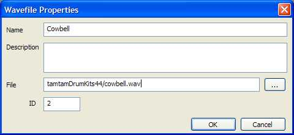

Any number of .WAV files can be associated with the project. These files can be located in any directory on the computer. Currently wave files are only used by the WF Player instrument. Each wave file is given an ID value that is used to select the sound for the WF player.
To add a wave file, right click the "Wavefiles" entry in the project tree and then select "Add existing file" from the popup menu. Enter the information in the wave file properties dialog and press OK.
